Dado el siguientes datos XPath online real-time tester, evaluator and generator for XML & HTML
(xpather.com) se pide realizar las siguientes consultas:
- Título de las actividades
/actividades/actividad/titulo/text()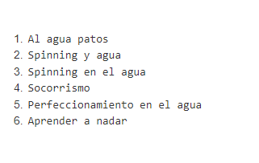 - Mostrar el código de la actividad, título y nivel.
/actividades/actividad/codigo/text()|/actividades/actividad/titulo/text()|/actividades/actividad/@nivel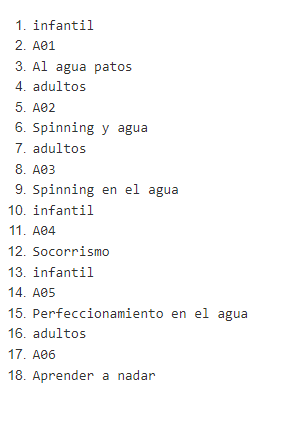 - El primer título de la actividad.
/actividades/actividad[1]/titulo/text()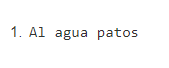 - El último título de la actividad.
/actividades/actividad[last()]/titulo/text()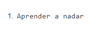 - Todos los elementos descendientes de las actividades infantiles.
/actividades/actividad[@nivel="infantil"]/*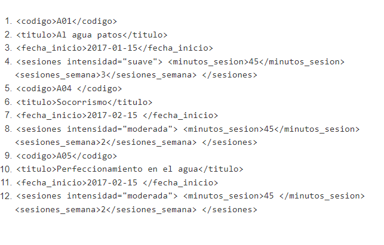 - El nombre de las actividades para adultos.
/actividades/actividad[@nivel="adultos"]/titulo/text()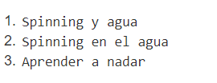 - El nombre de las actividades con dos sesiones semanales
/actividades/actividad[sesiones/sesiones_semana=2]/titulo/text()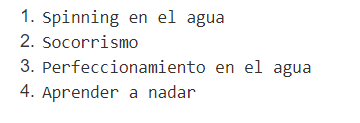 - Número de actividades
count(/actividades/actividad)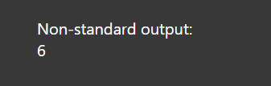 - Si queremos convertir el resultado a cadena de caracteres, podemos usar la función string().
string(count(/actividades/actividad))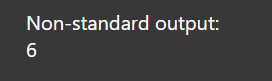 - Cuenta del número de actividades infantiles.
count(/actividades/actividad[@nivel="infantil"])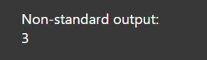 - Suma de las sesiones semanales de las actividades para adultos.
sum(/actividades/actividad[@nivel="adultos"]/sesiones/sesiones_semana)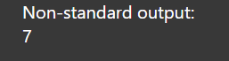 - Nodos de la actividad de código A06.
/actividades/actividad[codigo="A06"]/*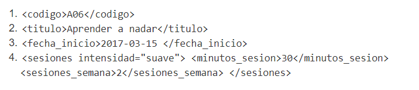 - Duración de las actividades con intensidad fuerte
/actividades/actividad[sesiones/@intensidad='fuerte']/sesiones/minutos_sesion/text()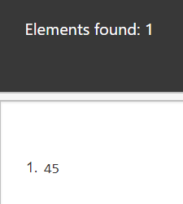 - Mostrar el código de las actividades cuya duración coincide con la duración del 1º actividad.
/actividades/actividad[sesiones/minutos_sesion = /actividades/actividad[1]/sesiones/minutos_sesion]/codigo/text()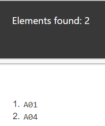 - Título de las actividades del año 2018.
/actividades/actividad[starts-with(fecha_inicio, '2018')]/titulo/text()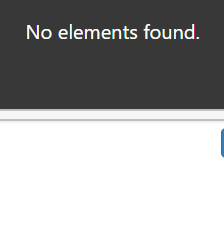